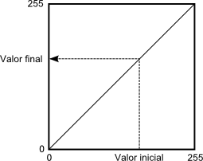

Procesado de imágenes
Las imágenes constituyen un tipo particular de dato a partir del cual puede derivarse abundante información. Ya sea como elementos meramente visuales cuyo único fin es la representación junto a otras capas de información, o bien como base para análisis más complejos, las imágenes son uno de los componentes más importantes del uso habitual de un SIG. Sus particularidades las hacen merecedoras de un capítulo propio dentro del cual tratar aquellos análisis desarrollados especialmente para este tipo de datos, que comparten, no obstante, cierto número de sus principios fundamentales con otros de los análisis ya vistos.
Puesto que las imágenes se almacenan en formato ráster, es esencial comprender este formato para seguir el contenido del capítulo, así como los distintos tipos de imágenes y sus procedencias, esto último según se vio en el capítulo Fuentes_datos. Igualmente, los elementos del álgebra de mapas, por compartir elementos comunes, deben conocerse para entender la aplicación de estos al análisis de imágenes.
Al final de este capítulo se tendrá una visión genérica de la potencialidad que las imágenes presentan de cara al análisis geográfico.
Introducción
Las imágenes como tipo de dato son parte de los SIG desde prácticamente su origen, y las formulaciones dedicadas al análisis de estas existen también desde entonces y son un campo muy desarrollado. Este análisis representa una de las áreas más ricas, combinando aquellas formulaciones que consideran la naturaleza del tipo particular de imágenes que se usan en un SIG —esto es, el hecho de que son imágenes de la superficie terrestre— junto con las que existen para el análisis y proceso de imágenes digitales en general. Estas últimas constituyen por sí solas un amplio grupo de técnicas que, en conjunto con las dedicadas al análisis de datos espaciales, forman una serie de herramientas de gran utilidad para el uso genérico de los SIG.
Si la consideramos simplemente como una estructura de datos, una imagen no es sino una capa ráster más. Tiene la estructura regular de una capa ráster y contiene en cada celda (cada píxel de la imagen) el valor asociado a una variable dada. Particularmente, esta variable es la intensidad de la reflectancia en una longitud de onda dada.
No existe diferencia «formal» entre un MDE creado a partir de la información recogida por un sensor remoto tal como los utilizados, por ejemplo, para la Shuttle Radar Topographic Mision (SRTM), y una imagen de satélite tal como las que proporciona el satélite LANDSAT (salvo el hecho de que esta última contiene varias bandas en lugar de una única). No obstante, la naturaleza de la variable recogida en la imagen y la componente visual intrínseca a la misma hacen que el campo del análisis de imágenes presente sus particularidades, que serán las que veremos a lo largo de este capítulo.
En conjunto, estudiaremos los elementos básicos del análisis de imágenes digitales, así como las formulaciones específicas para el caso de imágenes aéreas o procedentes de teledetección, es decir, las formulaciones específicas para el tipo de análisis que se realiza en un SIG. Algunas formulaciones más particulares se verán en la parte dedicada a las aplicaciones.
Tanto uno como otro de estos grupos son muy extensos, y en el espacio de este capítulo no pueden recogerse sino las formulaciones más habituales y útiles de ambos. La teledetección queda en muchas ocasiones fuera de los textos al uso sobre SIG, como una disciplina con entidad propia, relegándose también junto a ella al procesado de imágenes. No obstante, los SIG no pueden entenderse hoy día sin el concurso de imágenes, ya sea como elementos visuales o como objetos de análisis, y las metodologías dedicadas a su procesado deben recogerse al menos en cierta medida en un libro como este.
Debido a lo extenso de la materia a tratar y a la fuerte componente matemática con la que puede presentarse, se ha simplificado la exposición, incluyendo estos elementos matemáticos en limitadas ocasiones y dando más peso al aspecto práctico. En caso de que el lector esté interesado, las referencias indicadas a lo largo del capítulo contienen descripciones detalladas de las fórmulas y procesos que definen cada una de las operaciones sobre imágenes que veremos a continuación
La utilidad de las imágenes en un SIG
Antes de estudiar las técnicas de procesado de imágenes, debemos conocer la utilidad que estas tienen cuando son incorporadas a un SIG. Debemos tener en cuenta que no se trata de un dato tan genérico como, por ejemplo, una capa ráster. En esta podríamos almacenar tanto variables continuas como categóricas, y ya sean de un tipo o de otro, pueden ser variables de naturaleza muy variada, desde un valor de temperatura a uno de presión, pasando por el tipo de suelo o el número de individuos presentes en una celda de la capa. Las imágenes presentan una amplitud menor en cuanto a la información que pueden contener, y aunque como ya vimos existe gran variabilidad en los contenidos dependiendo de la forma de recogida de dicha información, esto restringe y condiciona los resultados que pueden perseguirse a través del análisis de estas imágenes.
En líneas generales, podemos identificar los siguientes procesos, que serán a los que se adapten las técnicas que veremos a lo largo del capítulo.
- Representación. Las imágenes son, ante todo, elementos visuales, y en muchos casos no se utilizan más que para conformar una base sobre la que emplazar otras capas. En este sentido, las imágenes son utilizadas para proveer un contexto visual en el entorno de trabajo de un SIG.
Este libro contiene una parte entera dedicada a la generación cartográfica, en la cual se tratan aspectos relativos a la representación de todo tipo de capas de datos espaciales, entre ellas las imágenes. No obstante, la literatura es abundante en algoritmos que permiten mejorar las capacidades que una imagen tiene de transmitir su información o de establecer ese citado contexto visual, y estos algoritmos se detallarán en este capítulo.
- Identificación de elementos. La realidad que se refleja en una imagen esta compuesta por los objetos presentes sobre la superficie terrestre. Arboles, carreteras, zonas de distinta vegetación, así como otros muchos elementos de pequeño o gran tamaño son los que constituyen esa realidad. Conocemos ya fórmulas para tratar con esos elementos y estudiarlos dentro de un SIG. Obtener a partir de las imágenes nuevas capas que los contengan es una tarea habitual que pone de manifiesto la gran utilidad de estas.
La identificación y delineación de estos elementos puede implicar la creación de nuevas capas vectoriales o bien de capas ráster, así como las transformaciones encaminadas a que dichas operaciones de identificación se realicen de manera lo más precisa posible.
- Identificación de características. Si tomamos una imagen, podemos identificar por sus formas una carretera, y decir si es ancha o estrecha, larga o corta, o bien si es sinuosa o rectilínea. Estos parámetros geométricos son los que nos ayudan a identificar el elemento en sí, según lo comentado en el punto anterior, pero no es solo lo referente a la geometría lo que una imagen puede contener acerca de esa carretera. Mirando esa misma imagen, es probable que podamos decir por su color si el firme es asfaltado o, por el contrario, es de tierra y se trata de un camino. Esta identificación de las propiedades de un elemento, o bien de una simple celda aislada, es otra de las funciones básicas que se llevan a cabo a partir de imágenes.
Dentro de este grupo merecen especial mención aquellas formulaciones que estiman propiedades físicas de los elementos recogidos en la imagen. Con los valores de una imagen puede estimarse desde el vigor vegetativo de una masa arbórea hasta la turbidez del agua de un embalse, entre otros muchos parámetros físicos de diversa índole.
Tipos de procesos con imágenes
Teniendo en consideración las anteriores utilidades básicas de las imágenes en un SIG, las operaciones sobre estas imágenes pueden dividirse en tres grupos principales:
- Corrección. Los equipos empleados para recoger las imágenes pueden incorporar errores, ruido, o distorsiones. Eliminar o tratar estas para que su efecto sea menor es un proceso previo que en la mayoría de los casos es un requerimiento imprescindible antes del análisis.
- Mejora. La mejora es el paso siguiente a la corrección. Una vez que las imágenes han sido corregidas, la información que contienen puede hacerse más explícita a través de distintos tipos de modificaciones. En el análisis visual, la mejora de una imagen hace que sea más sencillo percibir el contenido de esta y darle un uso directo. Las características de esa carretera o su propia forma, pueden verse más claramente. Cuando estos procesos de identificación de elementos y características se realizan de forma automática mediante algoritmos y no manualmente, también es importante una preparación de las imágenes para mejorarlas de cara a este proceso. Mejorando una imagen, mejoramos también la capacidad de esos algoritmos de «ver» la información que pretendemos obtener, de un modo muy similar a como sucede con un observador humano.
- Extracción de información. Los valores de las distintas bandas de una imagen pueden emplearse para derivar otros nuevos, tales como variables de tipo físico o pertenencia a clases predefinidas que pueden identificar los elementos presentes sobre el terreno. Estos procesos implican una interpretación de la imagen en cuestión.
Análisis visual y análisis automático
Las tareas de corrección y mejora van a implicar necesariamente la utilización de algoritmos, los cuales veremos en las siguientes secciones. Estas operaciones, como hemos dicho, favorecen el buen desarrollo de la extracción de información posterior, y mejoran los resultados obtenidos. Las operaciones de extracción de información, al contrario que las anteriores, pueden llevarse a cabo tanto manualmente y de forma visual(por ejemplo, digitalizando directamente en pantalla), como de forma automatizada (veremos algoritmos para ello en este capítulo, así como en otros posteriores). Existe, pues, un análisis manual que requiere un operario visualizando y tratando una imagen, y otro automático en el que se deja al propio SIG realizar esta tarea.
Algunas de las principales diferencias entre el análisis visual y el automático se enuncian a continuación. Estas condicionan la utilización de una u otra solución en función de las necesidades.
- El análisis visual requiere conocimientos más sencillos e intuitivos, mientras que el automático requiere conocimientos técnicos para ajustar los algoritmos que realizan el proceso.
- Mientras que el análisis visual se basa tanto en las propiedades espaciales como en las tonalidades de la imagen, en el caso de un análisis automático, este se basa fundamentalmente en los valores de reflectancia, incorporando en ocasiones cierta componente espacial. Las propiedades de forma, tamaño u orientación, aunque importantes como vimos en el apartado anterior, resultan más difíciles de ser reconocidas y empleadas por los algoritmos correspondientes que las basadas en el análisis de los Niveles Digitales.
- El ojo humano puede analizar imágenes en blanco y negro o en color, pero es difícil que pueda trabajar con imágenes con más bandas, que pueden llegar incluso a cientos. Por ello, las imágenes multi e hiperespectrales se analizan de forma habitual mediante algoritmos y procesos automatizados, mientras que el análisis visual queda limitado para las imágenes más sencillas. Como veremos más adelante, pueden crearse representaciones en color de las imágenes con elevado número de bandas, acercando de ese modo la posibilidad de un análisis visual de las mismas, aunque en ningún caso de la totalidad de bandas, sino solo de un subconjunto muy reducido de ellas. De igual modo, una banda aislada puede analizarse visualmente, pero ello no permite acceder a toda la información que el conjunto de bandas de la imagen puede aportar, mientras que el análisis no visual no se encuentra restringido por las limitaciones propias de la visión humana.
- La naturaleza del análisis automatizado es fundamentalmente cuantitativa, incorporando formulaciones estadísticas o análisis matemáticos basados en los valores que se recogen en cada píxel. Por el contrario, el análisis visual se basa en propiedades cualitativas de los elementos de la imagen, más sencillas de percibir e interpretar por quién desarrolla dicho análisis.
Es importante tener en cuenta estas diferencias, ya que las circunstancias en las que va a ser necesaria la interpretación de una imagen pueden ser muy variadas, debiendo en cada caso procederse a ella de la forma más adecuada.
Correcciones y preparación de imágenes
Del mismo modo que un MDE contiene depresiones irreales (véase capítulo Geomorfometria) que deben ser corregidas antes de proceder a su análisis hidrológico, las imágenes presentan también otros elementos que hacen necesaria una preparación antes de pasar al uso propiamente dicho. Estos elementos están relacionados con la forma en que los sensores capturan la información y las imprecisiones que en este proceso pueden aparecer, y tratan de eliminar estas imprecisiones para que los Niveles Digitales de las distintas celdas reflejen fielmente la realidad presente en el momento de capturar dicha imagen.
Independientemente del número de bandas de la imagen, las correcciones se realizan de forma individual para cada una de las bandas, ya que algunos de los errores pueden aparecer solo en parte de dichas bandas, y no necesariamente sobre todas ellas de forma simultanea para un mismo píxel.
Los tipos principales de deficiencias que puede contener una imagen son los siguientes:
- Geométricas. Distorsiones de forma provocadas por los movimientos y oscilaciones del sensor, o por el relieve del terreno, entre otros factores. Con una base conceptual relacionada con las técnicas de corrección de estas deficiencias, existe un paso básico que debemos llevar a cabo en muchos casos: la georreferenciación de la imagen. Para incorporar dicha imagen dentro del ámbito de un SIG, es necesario que le asignemos una referencia geográfica ya que, como bien sabemos, todos los datos espaciales han de tener definida su posición en el espacio. Cuando esta referencia no existe, es necesario llevar a cabo un proceso que la defina.
- Radiométricas. Valores incorrectamente recogidos por el sensor. Pueden ser debidas a errores del sensor o introducidos en el proceso de almacenamiento o transmisión, o bien a distorsiones debidas al efecto que la atmósfera ejerce sobre la radiación (y por tanto sobre los valores recogidos).
Corrección geométrica
Por la propia naturaleza del proceso de toma de imágenes, estas presentan habitualmente diversas formas de distorsión geométrica. Entre ellas, cabe mencionar las debidas a los siguientes factores [Richards1986Springer]
- La rotación de la Tierra durante la toma de la imagen.
- La frecuencia de escaneo del sensor.
- La curvatura de la Tierra.
- Los efectos panorámicos.
- Las variaciones en la velocidad y altura de la plataforma de registro.
Para disminuir estos efectos existen una serie de métodos cuya finalidad es corregir y distorsionar la imagen original con objeto de que esta constituya una representación más fiable de la escena original [Lillesand1997Wiley]. Dos son los métodos más utilizados para la corrección geométrica de las imágenes: la rectificación y la ortorectificación.
Rectificación
El proceso de rectificación se fundamenta en el establecimiento de una correspondencia entre las coordenadas de los píxeles de la imagen y las coordenadas reales sobre el terreno de los objetos que estos píxeles representan. Por medio de una función de transformación de la forma
\begin{equation} (x', y') = f(x,y) \end{equation}
se establece la anterior correspondencia, que permite modificar la imagen original y obtener una nueva. Esta, como resultado de las distorsiones y modificaciones que se introducen, refleja más fielmente el terreno y corrige los errores geométricos que han aparecido durante la toma de la imagen.
El proceso de rectificación implica el cálculo de la función de transformación, para lo cual se emplea un conjunto de puntos de referencia o puntos de control}. Estos son elementos puntuales de los cuales se conoce con exactitud sus coordenadas reales (bien habiéndolas tomado sobre el terreno o bien con una imagen ya corregida cuya georreferencia pueda emplearse como dato fiable), y pueden localizarse en la imagen. Identificando estos puntos y localizándolos sobre la imagen a corregir se puede calcular la transformación de tal forma que al aplicar dicha transformación sobre los puntos de control, pasen a tener las coordenadas que realmente les corresponden con un error mínimo.
Los puntos de control deben buscarse en elementos del terreno que sean fácilmente localizables y que puedan definirse con la mayor precisión posible. Cruces de caminos u otros puntos singulares son habitualmente empleados para este fin. Lógicamente, la elección de estos puntos depende de la resolución de la imagen, ya que elementos tales como vértices geodésicos, muy aptos para ser puntos de control, pueden verse en las imágenes de gran resolución pero no en las de menor resolución.
Con los puntos de control determinados, debe elegirse un tipo de función para ajustar. Una transformación afín puede ser una opción inicial, pero las modificaciones que permite (rotación, traslación y cambio de escala) no son suficientes para la corrección de las distorsiones geométricas habituales, ya que estas son de una naturaleza más compleja. Funciones de segundo o tercer grado son las opciones más habituales que cumplan los requisitos necesarios, ajustándose estas mediante mínimos cuadrados.
El número de puntos de control debe ser mayor al estrictamente necesario para poder realizar el ajuste, ya que la redundancia que aportan los puntos adicionales da significación estadística a la bondad de este.
En base a los puntos de control puede calcularse la bondad del ajuste mediante el cálculo del error medio cuadrático. Por muy precisa que sea la transformación que realicemos, esta núnca va a asignar a todos los puntos de control la coordenada correcta que les corresponde, y que es la que hemos usado para definir dicha transformación. Las discrepancias entre esas coordenadas reales de los puntos de control y las asignadas a los mismos a partir del polinomio ajustado definen el error medio cuadrático del ajuste según la siguiente expresión:
\begin{equation} \mathrm{EMC} = \sqrt{ \frac{\sum_{i=1}^{N} (x_i - x'_i )^2 + (y_i - y'_i)^2}N } \end{equation}
Para poder calcular el error medio cuadrático, se necesita al menos un punto de control más que el mínimo necesario para ajustar la función polinómica utilizada.
El proceso de rectificación no solo puede emplearse para la corrección geométrica de una imagen que dispone de una referencia geográfica incorrecta por presentarse distorsiones y deformaciones. También puede utilizarse para georreferenciar imágenes que carecen por completo de toda referencia geográfica.
Este caso, como vimos, es el habitual cuando utilizamos imágenes aéreas en formato impreso o mapas en papel, que han de ser escaneados (digitalizados) para poder incorporarse como datos dentro de un SIG, según vimos en el apartado Escaneo. El proceso de escaneado digitaliza la imagen pero no la referencia geográfica de esta en caso de que exista. Las marcas fiduciales o las coordenadas señaladas en un mapa no son interpretadas como tales una vez la imagen resultante de la digitalización se incorporar a un SIG. Por ello, es necesario definir dicha referencia geográfica para que la imagen adquiera todo su significado.
El proceso se lleva a cabo de igual modo, localizando puntos de control en la imagen (de los cuales solo se conocen sus coordenadas dentro de la imagen, en el espacio de referencia de los píxeles), y dándoles coordenadas reales en base a las cuales pueda definirse la transformación correspondiente.
La imagen \ref{Fig:Rectificacion} muestra un ejemplo gráfico de este proceso. Se dispone de un mapa escaneado sin coordenadas, y una imagen de la que sí se conocen las coordenadas de cada píxel, pues ha sufrido un proceso de georreferenciación y corrección previo. Localizando un número suficiente de puntos singulares en ambas imágenes, puede establecerse la transformación que permite asignar coordenadas a todos los píxeles del mapa escaneado. Una vez el proceso se ha realizado, este mapa escaneado puede ya emplearse dentro de un SIG junto con cualquier otra capa que represente esa misma porción del terreno, pues contienen toda la referencia geográfica necesaria.

Ortorrectificación
La ortorrectificación persigue un objetivo similar a la rectificación, pero incluye un factor adicional: la elevación. En lugar de darse una transformación plana, esta es de tipo espacial, ya que utiliza los valores de elevación correspondientes a los distintos píxeles para proceder al ajuste.
Esta elevación provoca un desplazamiento aparente de los píxeles y, según el caso, puede ser tan necesario corregir este efecto como lo es el hacerlo para las distorsiones del plano. En la figura \ref{Fig:Ortorrectificacion} se muestra una fotografía aérea antes y después del proceso de ortorrecificacion. A esta segunda se la denomina ortofotografía.

La figura \ref{Fig:Empire_state} muestra claramente el efecto de las distorsiones que derivan del relieve del terreno o de la propia altura de los elementos fotografiados, tales como grandes edificios.
La ortofotografía tiene una escala uniforme, y es como una versión fotográfica de un mapa de esa zona. Por esta razón, pueden medirse áreas y distancias en ella, o utilizarla para superponer sobre ella otras capas. En una imagen sin ortorrectificar, y cuando las distorsiones geométricas derivadas del relieve son notables, la medición daría lugar a valores erróneos y la superposición con otras capas no tendría una coincidencia completa.
Puesto que se emplean las elevaciones, el concurso de un Modelo Digital de Elevación es imprescindible, pudiendo este proceder del mismo origen que la propia imagen a ortorectificar (en caso de que el sensor ofrezca igualmente pares de imágenes estereoscópicas, y procediendo de la forma que vimos en la sección Fotogrametria), o bien de otra fuente distinta.
El proceso de ortorrectificación es complejo y tiene una base matemática extensa. El lector interesado puede encontrar más detalles, por ejemplo, en [Vassilopoulou2002ISPRS].
Corrección radiométrica
La corrección radiométrica corrige valores erróneamente registrados o ruido presente en la imagen, entre otras alteraciones que pueden aparecer en esta. Existen muchas razones por las que el Nivel Digital recogido en un píxel puede no ser correcto y no reflejar con fidelidad la realidad presente sobre el terreno.
En algunos casos el valor que aparece en el píxel es un valor erróneo del cual no puede extraerse información alguna. Este caso se presenta, por ejemplo, si en el proceso de almacenamiento se ha producido una mala transmisión y algunos píxeles se han «perdido». La información necesaria para establecer un valor correcto en dichos píxels no puede tomarse del propio píxel, sino que es necesario recurrir a los píxeles circundantes o a otros elementos tales como el histograma de la imagen.
En otros casos, no obstante, el Nivel Digital del píxel sí contiene información valiosa, y lo que es necesario es transformar este, ya que, debido a la influencia de factores externos, no es exactamente el que debiera corresponderle. El conocimiento de esos factores externos es necesario para poder realizar esta transformación.
En función de la causa que los ha originado, distinguimos los siguientes tipos de errores:
- Errores debidos a los sensores. Los sensores pueden introducir errores en las imágenes tanto en forma de distorsión como en forma de ruido, ya sea este regular o aleatorio. Por ejemplo, los sensores ópticos pueden presentar distorsiones achacables a las lentes, que con frecuencia se manifiesta en áreas más oscuras en el borde de las imágenes en comparación con las celdas centrales. En el caso de sensores electro-ópticos, deben emplearse datos auxiliares para la calibración de estos y así garantizar el registro correcto de los valores correspondientes. Errores habituales dentro de este grupo son igualmente los píxeles o líneas perdidas, apareciendo píxeles aislados o líneas completas cuyos valores deben descartarse. La estimación de valores para dichos píxeles o líneas se realiza empleando los valores de píxeles circundantes, pues existe una relación clara entre ellos. El empleo de filtros (ver más adelante el apartado Filtros), es una técnica habitual para realizar esta corrección. Existe también correlación entre las distintas bandas de una imagen, por lo que no solo pueden utilizarse los píxeles de la misma banda, sino también los propios píxeles perdidos, pero en otras bandas. En general, los sensores que recogen las distintas longitudes de onda (las distintas bandas) son independientes, por lo que el error no debe aparecer en todas ellas.
- Errores debidos a la topografía. Además de producir distorsiones geométricas como ya hemos visto, las formas del relieve condicionan la forma en que la radiación es reflejada, ya que dicha reflexión esta condicionada por el ángulo de incidencia. El uso de Modelos Digitales de Elevaciones e información sobre las condiciones de iluminación en las que se ha tomado la imagen permite plantear modelos de iluminación que pueden corregir estos efectos.
Existen diversas formas de aplicar una corrección a una imagen y eliminar el efecto de la topografía, algunas de ellas relativamente simples. Una formulación simple es la siguiente:
- A partir de un Modelo Digital del Elevaciones se calcula una capa de relieve sombreado. Los parámetros empleados para su creación (azimut y elevación) deben coincidir en la medida de lo posible con las existentes en el momento en que la imagen fue recogida.
- Se realiza una regresión entre esta capa de relieve sombreado y la imagen a corregir, de forma que se tenga una función de la forma $y=ax + b$.
- Se aplica la transformación definida por la anterior ecuación a los valores de la capa de relieve sombreado.
- Se resta la capa resultante a la imagen a corregir.
- Se suma a la capa resultante del paso anterior el valor de reflectancia media de la imagen original.
- Errores debidos al efecto de la atmósfera en la radiación. Los errores debidos a la atmósfera son de los más importantes dentro de los que provocan alteraciones radiométricas en la imagen, y son estudiados en ocasiones de forma independiente, en lugar de como un subtipo de error radiométrico. Para comprender la necesidad de esta corrección debe tenerse en cuenta que en algunos casos lo que interesa de la imagen no son los Niveles Digitales, sino una variable con sentido físico como la radiancia correspondiente a cada longitud de onda. Será esta radiancia la que luego se analice para la obtención de otros parámetros físicos derivados, y su obtención se realiza a partir de los Niveles Digitales aplicando ecuaciones lineales con parámetros dependientes del sensor. El problema estriba en que la radiancia que se obtiene al aplicar este proceso es la que ha alcanzado el sensor, que no ha de corresponderse necesariamente con la que se tiene sobre el terreno o la que recibiría el sensor si estuviera a una distancia mínima del objeto. La atmósfera afecta a la radiación en su camino desde el suelo hasta el sensor, y distorsiona la información recogida. Los efectos atmosféricos son principalmente de dos clases: difusión y absorción. La difusión es causada por las partículas de pequeño tamaño de la atmósfera, que desvían una parte de la energía radiante, alterando su dirección. La modificación que se produce depende del tamaño de las partículas implicadas en relación con la longitud de onda de la radiación [Liou2002Academic]. La absorción, por su parte, se produce cuando los elementos constituyentes de la atmósfera absorben parte de la radiación para emitirla posteriormente en una longitud de onda distinta. La intensidad de la radiación disminuye con el efecto de la difusión. Ambos efectos conjuntos producen un efecto de «neblina» en la imagen, restándole contraste. La difusión, asimismo, tiene un efecto adicional de adyacencia, ya que cada píxeles recoge parcialmente la radiación que en realidad debería corresponder a otros píxeles contiguos. La corrección de los efectos atmosféricos es compleja y existen muchas formulaciones distintas que escapan al alcance de este texto. Para saber más, una buena descripción de estos métodos puede encontrarse en [Kaufman1989Wiley]
Mejoras
Una vez las imágenes están corregidas, puede procederse a su análisis. Este, no obstante, en especial el de tipo visual, puede proporcionar mejores resultados si se tratan los valores de la imagen con anterioridad, efectuando ajustes encaminados a mejorar las imágenes como datos de partida. Este tipo de tratamiento no es imprescindible, pero sí interesante de cara a preparar las imágenes, y existen numerosos métodos para ello.
Podemos comprender mejor esto si pensamos en el tratamiento de imágenes fotográficas habituales. Los métodos que se aplican para realzar el color de estas, enfocar zonas borrosas, o ajustar el brillo o el contraste, entre otros, se pueden aplicar de idéntica forma a imágenes aéreas o de satélite. El efecto que tienen sobre estas es similar, mejorando la forma en que las percibimos, y también la forma en que sus valores pueden ser analizados en otros procesos posteriores.
Todos estos procesos son elementos del análisis de imágenes digitales genéricas, que al ser aplicados sobre imágenes aéreas o de satélite mantiene su mismo significado y utilidad a pesar del contexto particular en el que se utilizan.
Operaciones píxel a píxel
Las operaciones de esta clase se corresponden con las funciones de tipo local del álgebra de mapas, ya que toman el Nivel Digital de un píxel de la imagen original y únicamente en función de su valor calculan el del mismo píxel en la imagen resultante. Por ello, todas estas operaciones tienen la forma
\begin{equation} ND' = f(ND) \end{equation}
Según sea la función, tenemos un tipo u otro de operación, con un efecto concreto. Para mostrar estas funciones de forma gráfica, emplearemos gráficas como la siguiente, la cual se corresponde con la transformación identidad.

La gráfica establece una relación entre el Nivel Digital original y su tonalidad asociada (en abscisas) y los correspondientes en la imagen resultante (en ordenadas). Aplicando esta transformación a todos los píxeles, se obtiene la imagen mejorada.
A la hora de definir estas funciones de transformación, un elemento de utilidad es el histograma, ya que da una visión global de los Niveles Digitales presentes en el conjunto de píxeles de la imagen. La distribución de Niveles Digitales representada en el histograma aporta una información a partir de la cual pueden definirse estas operaciones de mejora a nivel de píxel.
Segmentación
La primera operación que veremos es la segmentación, cuyo objetivo es particionar una imagen en diversas regiones en base a criterios de homogeneidad o heterogeneidad [Haralick1992Addison].
Aunque veremos que existen muchas formas de segmentación, en su forma más básica se trata de una operación píxel a píxel cuyo resultado es lo que conocemos como una imagen binaria. Esto quiere decir que dicha imagen tiene únicamente dos valores: uno de ellos representa lo que se conocen como objetos (que se representan habitualmente en negro), y otros representan el fondo de la imagen (habitualmente blanco).
Este procedimiento nos sirve para separar partes de la imagen en función de sus valores. Muy frecuentemente, encontraremos en una imagen algunos elementos que nos resultarán de interés (por ejemplo, una carretera a lo largo de una zona desierta, claramente diferenciable), y resultará de interés separar esos elementos del resto de la imagen. Esto permitirá que sea más sencillo operar con esos elementos en posteriores operaciones. La segmentación simplifica los elementos de la imagen, y la imagen resultante tiene menor complejidad pero resulta más útil a la hora de realizar tales operaciones.
La figura \ref{Fig:Segmentacion} nos muestra el resultado de una operación de segmentación aplicada sobre una imagen base (en este caso se trata de una ortofoto en blanco y negro). En los sucesivos apartados se empleará esta misma imagen original para ilustrar cada procedimiento. La curva de transformación asociada, con un umbral aplicado de 173, se muestra en la figura \ref{Fig:Curva_Segmentacion}.

Como vemos, la función de transformación simplemente establece un valor umbral, a partir del cual se asocia el valor 255, mientras que por debajo se asocia el valor 0 (es habitual también emplear los valores 1 y 0 en lugar de los anteriores). Suponemos en este caso que los valores que resultan de interés y queremos aislar son aquellos que presentan valores superiores al umbral, mientras que todos los restantes los consideramos parte del fondo. La operación puede realizarse también al contrario, en caso de que los objetos a separar vengan caracterizados por valores bajos. En este caso, se asignaría 255 a los valores por debajo del umbral y 0 a los restantes.
La selección del umbral es el elemento clave en esta forma de segmentación, y condiciona el resultado del procedimiento. El umbral puede seleccionarse en base a las propias características de la imagen, o bien a partir de un conocimiento previo de las características de los objetos a definir. En el primer caso, el histograma de la imagen se convierte en una herramienta base para definir el umbral correctamente.
Además de establecerlo de forma directa mediante un valor concreto, existen diversas formulaciones que permiten fijar un umbral de forma automática, siendo formulaciones adaptativas. De igual modo, este umbral puede no ser constante para toda la imagen, y realizarse una segmentación por zonas, de tal modo que no se emplee el mismo umbral en todas ellas. Esto puede mejorar la eficacia del proceso, ya que la relación entre el fondo y los objetos a separar no ha de ser la misma en todas las áreas de la imagen.
En [Kishan2003Tennessee] se describen formulaciones alternativas para esta definición automática de umbrales.
Este tipo de segmentación es, como se ha dicho, la forma más sencilla de esta clase de procesos, ya que la imagen de partida es una imagen en escala de grises (imagen de una banda), y el resultado es una imagen binaria. Se pueden, no obstante, segmentar imágenes multibanda y hacerlo no en dos partes (fondo y elemento), sino en un número mayor de ellos (fondo y distintos elementos, codificados con distintos valores), entrañando las formulaciones correspondientes una complejidad lógicamente mayor. Existen, por tanto, otros métodos de segmentación, muchos de los cuales no implican únicamente operaciones píxel a píxel, sino más complejas. Aunque no entraremos a detallarlas con tanta profundidad, se enumeran y describen brevemente a continuación las principales familias en que podemos dividir dichos métodos [Luong1998DPR]:
- Segmentación basada en umbral. Del tipo de los que hemos visto hasta el momento.
- Segmentación basada en regiones. Se ha de proporcionar al algoritmo una serie de puntos que definan las distintas regiones, tales como puntos centrales de las mismas. A partir de ellos, se va ampliando el espacio ocupado por cada región (de un único punto) en función de la homogeneidad de las celdas circundantes.
- Segmentación basada en agregación. Métodos iterativos que agrupan los píxeles en grupos de forma que estas agrupaciones sean lo más homogéneas posibles. Estos algoritmos no los vamos a tratar en esta sección, pero sí que se describen en otro punto de este texto, dentro de la sección Clasificacion_no_supervisada dedicada a la clasificación no supervisada.
Para el lector interesado, en [Gonzales1993Addison] o [Haralick1992Addison] pueden encontrarse tratados en profundidad todos estos distintos grupos de metodologías.
Desde el punto de vista de las operaciones del álgebra de mapas que conocemos, la segmentación es una reclasificación de valores lo más sencilla posible, ya que únicamente se crean dos clases (la de valores por debajo del umbral y la de valores por encima de él). Un proceso algo más complejo es la definición de varios umbrales, de forma que aparezcan más clases, siendo este también equivalente a la reclasificación según la vimos en su momento. No obstante, en el ámbito del análisis de imágenes esta operación se conoce habitualmente con el nombre de Density slicing.
Expansión de contraste
Puesto que muchos de los procedimientos de este apartado están, como se ha dicho, principalmente encaminados a la mejora visual de la imagen y que esta aporte más información a la hora de su visualización, la mejor manera de comprender uno de ellos es ver un ejemplo práctico, igual que hicimos en el caso de la segmentación. Para el caso de la expansión de contraste, la figura \ref{Fig:Expansion_contraste} muestra el resultado de aplicar este procedimiento sobre la imagen base ya presentada.
Como puede apreciarse si se compara con la imagen original, el proceso de expansión de contraste (también conocido como normalización) aporta mayor definición a los distintos elementos de la imagen. Esto es así porque la expansión del contraste modifica el histograma de tal forma que todos los valores posibles de los Niveles Digitales sean empleados. Es decir, que de los 255 niveles de intensidad de gris el histograma abarque todos ellos, y al traducirse eso en las tonalidades de gris a la hora de representarse, estas también vayan desde el valor 0 (negro) hasta el 255(blanco). Logrando esto, se obtiene la mayor definición visual que puede apreciarse en la imagen.
Este efecto se consigue escalando el histograma, «estirándolo» horizontalmente para que cubra todo el rango de valores. En imágenes cuyos Niveles Digitales se sitúan mayoritariamente en un intervalo reducido, la representación presenta tonalidades homogéneas que no aprovechan todo el contraste que puede lograrse con el rango completo de intensidades. Aplicando una transformación conveniente, se consigue que el histograma gane amplitud y la imagen gane en contraste.
A partir de una imagen con sus valores mínimo ($x$) y máximo($X$) respectivos, se trata de obtener una imagen que mantenga una distribución similar en su histograma, pero de tal forma que los valores mínimo y máximo pasen a ser otros distintos, en particular 0 y 255 como valores límites del rango habitual de Niveles Digitales. Para lograr esto la forma más simple es aplicar una fórmula como la siguiente.
\begin{equation} \label{Eq:Normalizar_imagen} ND' = \frac{255(ND - x)}{X - x} \end{equation}
donde $ND$ es el Nivel Digital de la imagen original y $ND'$ el de la imagen resultante.
Si recordamos lo visto en el apartado Funciones_locales, la normalización era una función de tipo local dentro del álgebra de mapas, y respondía a una expresión similar a la anterior. El fundamento en este caso es el mismo, aunque la finalidad sea aquí la de mejorar la imagen de cara a su visualización.
En el tratamiento de imágenes es habitual no aplicar directamente la expresión \ref{Eq:Normalizar_imagen} con los valores mínimo y máximo absolutos de la imagen. De hacerlo así, la presencia de valores atípicos alejados de la media (píxeles muy o muy poco brillantes) puede desvirtuar el rango en el que se sitúan realmente los Niveles Digitales de la imagen, y no conseguirse mediante la expansión de contraste el efecto deseado.
Una solución es acudir al histograma y tomar como valores de $x$ y $X$ no los extremos absolutos, sino los correspondientes a los percentiles del 5% y el 95%. Al operar con estos valores límite, aparecerán valores resultantes fuera del rango de destino (0--255 en el caso más habitual que citamos), que se igualan a los valores mínimo o máximo de dicho rango en función de si se encuentran fuera por el lado negativo o el positivo.
Otra solución frecuente para la selección de $x$ y $X$ consiste en tomar la frecuencia del pico del histograma (es decir, el número del píxel que representa el valor máximo de este), y definir un umbral utilizando un porcentaje de dicha frecuencia. El valor mínimo $x$ corresponde al valor del primer Nivel Digital que, empezando desde 0 y en sentido creciente (de izquierda a derecha del histograma), supera dicha frecuencia. De modo similar, el valor máximo $X$ se calcula recorriendo el histograma en sentido negativo (de derecha a izquierda) y tomando el primer Nivel Digital cuya banda de frecuencia en el histograma sea superior a la establecida por el umbral.
Si se aplica la normalización a una imagen multibanda, es importante tener en cuenta que las relaciones entre los Niveles Digitales de estas han de preservarse. Cuando se aplica normalización sobre un conjunto de capas ráster, el objetivo es escalar las distintas variables para que ocupen un rango homogéneo, y esta relación no es relevante. En el caso de imágenes, y trabajando con bandas en lugar de capas, sí lo es, ya que de ella dependen, por ejemplo, los colores obtenidos al componerlas para formar imágenes en falso color según veremos más adelante.
Modificación de brillo y contraste
Tanto el brillo como el contraste pueden modificarse mediante funciones lineales sencillas, tal como puede verse en la imagen \ref{Fig:Brillo_contraste}.

Suponiendo como es habitual que trabajamos en un rango de valores entre 0 y 255, la modificación del brillo se lleva a cabo con una función de la forma
\begin{equation} ND' = ND + c \qquad ; \qquad c \in [0,255]. \end{equation}
Valores positivos de la constante $c$ aclaran la imagen, mientras que los negativos la oscurecen.
Para el caso del contraste, las funciones son de la forma
\begin{equation} ND' = m ND + c \end{equation}
El valor de $c$ se calcula a partir del de $m$, según
\begin{equation} c = \frac{1- m}2 \end{equation}
Valores altos de la pendiente y puntos de corte negativos dan lugar a imágenes de alto contraste, mientras que valores bajos de pendiente y puntos de corte positivos producen imágenes de bajo contraste.
El caso de la expansión de contraste es un caso particular de este tipo de transformaciones lineales, que no obstante se ha analizado aparte por sus particularidades y por ser una operación muy frecuente. En concreto, la expansión de contraste es una operación que maximiza el contraste pero sin producir saturación en los tonos extremos (blancos y negros). La función de transformación correspondiente se representa en la figura \ref{Fig:Curva_expansion_contraste}.

El empleo de funciones no lineales permite mayor flexibilidad a la hora de mejorar el contraste, al tiempo que se evita la aparición de saturación en los extremos del rango de valores. Una de las funciones más habituales en este caso es la siguiente:
\begin{equation} ND' = ND ^ \alpha \end{equation}
Esta operación se conoce como corrección de gamma, y es habitual en el tratamiento de imágenes.
Las funciones sigmoidales como la mostrada a continuación también son una alternativa frecuente.
\begin{equation} ND' = \frac{1}{1+ e^{\alpha ND + \beta}} \end{equation}
Ecualización
La ecualización es un proceso similar a la normalización, en cuanto que hace más patentes las diferencias entre los distintos niveles de la imagen, añadiendo definición a esta. El proceso de ecualización modifica el histograma de tal modo que en la nueva imagen todos los niveles digitales tengan la misma frecuencia. De esta forma, se redistribuyen los valores de intensidad a lo largo de todo el espectro, igualando la presencia de estos en la imagen.
La figura \ref{Fig:Ecualizar} muestra la comparación entre la imagen original y la ecualizada, así como sus histogramas acumulados. Esto permite ver más claramente la naturaleza de la transformación. Teóricamente, si el histograma es constante tras la ecualización, el histograma acumulado debería ser una recta inclinada. El hecho de trabajar con valores discretos de los Niveles Digitales hace que no sea exactamente así, aunque puede claramente verse que la forma sí se asemeja a una recta en lugar de a la curva sigmoidal que presenta el histograma de la imagen original.

La función de trasformación deriva del propio histograma acumulado original, teniendo su misma forma. De este modo, se hace innecesario el elegir valores umbral sobre el propio histograma, tal como sucedía en el caso de la expansión de contraste. Para un píxel con un Nivel Digital $ND$ en la imagen original, se tiene un valor en la imagen ecualizada dado por la expresión
\begin{equation} ND' = T(ND) \frac{255}{N} \end{equation}
siendo $N$ el número total de píxeles de la imagen y $T(x)$ la función que define el histograma acumulado, es decir, el número de píxeles de la imagen con Nivel Digital menor que $x$.
Al trabajar con imágenes de varias bandas, deben tenerse en cuenta los mismos aspectos ya comentados para la expansión de contraste, en relación a la relación entre las distintas bandas. En [Lucchesse2001ICIP] pueden encontrarse detalles sobre ecualización de imágenes en color.
Filtros
Al igual que algunas de las operaciones vistas ya en este capítulo, los filtros son similares en concepto a parte de las operaciones que ya conocemos de capítulos anteriores. En particular, comparten sus fundamentos con las funciones focales del álgebra de mapas, aunque, al igual que en otros de los casos anteriores, la utilización de estas tiene aquí una función principalmente relacionada con la mejora visual.
Podemos dividir los filtros en dos tipos en función del tipo de modificación que realizan.
- Filtros de suavizado. Producen un efecto de desenfoque, restando definición a la imagen. Atenúan las diferencias entre píxeles vecinos.
- Filtros de realce: Producen un efecto de enfoque, aumentando la definición de la imagen. Acentúan las diferencias de intensidad entre píxeles vecinos.
Ciertos filtros calculan los nuevos valores como combinaciones lineales de los píxeles del entorno. Son las denominadas convoluciones, las cuales ya vimos en el capítulo dedicado al álgebra de mapas. La convolución se define mediante una matriz $n\times n$ (que denominábamos núcleo) y esta permite calcular el valor resultante de la operación. En función de los valores de la matriz, el efecto que el filtro tenga sobre la imagen será uno u otro.
Otros filtros, a diferencia de las convoluciones, se basan en funciones estadísticas que no pueden expresarse mediante un núcleo.
Filtros de suavizado
Como muestra la figura \ref{Fig:Suavizado}, los filtros de suavizado (también conocidos como filtros de paso bajo) provocan una perdida de foco en la imagen. Este efecto se consigue disminuyendo las diferencias entre píxeles contiguos, algo que puede obtenerse por ejemplo mediante un filtro de media. Como ya vimos, este puede expresarse mediante un núcleo como el siguiente:

El efecto del filtro de media vimos que, aplicado sobre una capa de elevación, «redondeaba» el relieve. En el caso de ser aplicado sobre una imagen hace que esta aparezca más borrosa. La cantidad de suavizado puede ser controlada, al igual que en el caso de aplicarse sobre otro tipo de capas ráster, mediante el tamaño de la ventana, que puede ser mayor que el habitual $3\times3$ anterior.
Otra forma de modificar el efecto del suavizado, en este caso limitándolo, es dando más peso al píxel central. Para ello puede emplearse un núcleo como el mostrado a continuación:

La media es sensible a los valores extremos de la ventana, por lo que una opción habitual es sustituir el filtro de media por uno de mediana. Este no es sensible a la presencia de valores extremos muy alejados de la media (outliers), y además garantiza que el valor resultante es un valor que existe como tal en la ventana de píxeles circundantes, lo cual puede resultar de interés en algunas circunstancias.
El filtro de mediana no es una convolución, y no puede por tanto expresarse mediante un núcleo como sucedía con el de media.
La aplicación de un filtro de suavizado no solo tiene como efecto el desenfoque de la imagen, sino que también elimina el ruido de la misma. Por ello, estos filtros son una buena herramienta para tratar algunas de las deficiencias de las imágenes, que como vimos pueden presentar píxeles con Niveles Digitales muy distintos de los de su entorno.
En la figura \ref{Fig:Filtro_mediana} puede observarse como la presencia de una línea errónea introducida en una imagen se corrige parcialmente con un filtro de mediana.

Filtros como el de mayoría o moda, que da como valor resultante de la celda aquel que se repite más entre las celdas circundantes, pueden también aplicarse para estos fines.
Las convoluciones tales como el filtro de media no son recomendables en muchos de estos casos, según sea el tipo de ruido que deseamos eliminar. Un tipo de ruido habitual es la presencia de píxeles blancos o negros debidos a errores de transmisión o almacenamiento, es decir, con Niveles Digitales extremos. El sesgo que introducen estos píxeles es muy alto, y la aplicación de un filtro de media no es válido para eliminar esta clase de ruido.
Otro tipo de ruido habitual es el conocido como sal y pimienta, que aparece frecuentemente al segmentar imágenes según vimos en un punto anterior. La imagen de salida contiene únicamente valores 1 y 0, representados de la forma habitual en blanco y negro respectivamente. Es normal que en la segmentación aparezcan píxeles con uno de dichos valores, rodeados por pixeles del otro, es decir píxeles completamente aislados. Esto da la sensación de una imagen sobre la que se han «esparcido» píxeles blancos (sal) sobre la parte negra, o negros (pimienta) sobre la parte blanca.
Para limpiar estas imágenes resultantes, se emplean también filtros como los anteriores. Un filtro de mediana aplicado sobre la imagen de la figura \ref{Fig:Segmentacion} (resultado de una segmentación) elimina gran parte de los píxeles aislados y genera el resultado mostrado en la figura \ref{Fig:Filtro_salt_pepper}.

Filtros de realce
Los filtros de realce (o de paso alto) tienen el efecto justamente contrario al de los anteriores, ya que acentúan las diferencias entre píxeles adyacentes, teniendo un efecto de enfoque. La definición aumenta, como puede verse en la imagen \ref{Fig:Realce}. Si se compara con la imagen original, se aprecia una separación más clara entre las tonalidades de píxeles contiguos, cuya diferencia se acentúa.

Para obtener un filtro de realce, puede partirse de uno de suavizado, ya que una forma de realzar las diferencias entre píxeles es emplear un filtro de paso bajo para obtener una imagen suavizada, y después restar esta imagen de la imagen original. Haciendo esto se elimina el valor medio y se deja en cada píxel el valor que refleja la variación local de los Niveles Digitales.
El núcleo que caracteriza esta transformación puede obtenerse realizando el mismo calculo sobre los núcleos de las operaciones independientes. Es decir, restando al núcleo identidad el de media, obteniendo el siguiente:

Filtros de detección de bordes
Con un fundamento similar a los anteriores, los filtros de detección de bordes permiten localizar las zonas donde se producen transiciones bruscas de intensidad. Aplicado esto al análisis de imágenes en un contexto geográfico, puede emplearse este tipo de filtros como herramientas para identificar zonas y fronteras entre distintas formaciones de una área de estudio.
Un operador habitual para la detección de bordes es el denominado filtro Laplaciano, el cual puede expresarse mediante un núcleo de la forma

Para hacer su expresión más sencilla, tanto este núcleo como los siguientes no se aplican según la ecuación \ref{Eq:Convolucion}, sino según la siguiente:
\begin{equation} \label{Eq:Convolucion} y=\sum_{i=1}^n z_i k_i \ ; \ k_i \in \mathbb{R} \end{equation}
Es decir, sin dividir el valor resultante entre la suma de los coeficientes.
En la figura \ref{Fig:Deteccion_bordes} puede verse el efecto de un filtro Laplaciano tiene sobre dos imágenes. En la imagen a), se ha aplicado sobre la imagen de ejemplo original. En el caso b) se ha empleado como imagen base la imagen ecualizada. Como puede apreciarse, la ecualización realza el efecto del filtro de detección de bordes, haciendo más patentes los resultados. Además de una mejora visual, la ecualización implica en este caso una mejora de los resultados derivados.
Para mostrar más claramente el resultado de estos filtros, se ha escogido una región de la imagen (en la parte superior izquierda) en lugar de la imagen completa, por contener un mayor número de entidades lineales. Como puede apreciarse, es en la detección de estos elementos lineales donde mejor actúan estos filtros.

El filtro Laplaciano tiene su base en el análisis de las segundas derivadas de la función que los Niveles Digitales definen y la detección de puntos donde esta se anule. Otros filtros se basan en el estudio del gradiente (la primera derivada) de forma que se realcen las zonas en las que existan variaciones notables entre las intensidades de píxeles contiguos.
Aplicando filtros de esta segunda clase, la detección de bordes puede hacerse restringida a una dirección predominante, tal como la vertical (detectando variaciones entre filas) o la horizontal (detectando variaciones entre columnas). Por ejemplo, con los filtros siguientes, conocidos como filtros de Sobel, cada uno de ellos correspondiente a una de las direcciones anteriores.

El resultado de aplicar estos filtros puede verse en la figura \ref{Fig:Sobel}.

Otros filtros habituales son los siguientes, denominados filtros de Prewitt,

Las variantes de estos filtros en las direcciones indicadas pueden combinarse en un filtro global según la expresión
\begin{equation} y= \sqrt{y_1^2 + y_2^2} \end{equation}
donde $y_1$ y $y_2$ son los valores resultantes de la aplicación de los filtros horizontal y vertical respectivamente.
El fundamento de este cálculo es similar a lo visto en Medidas_derivadas_primer_grado para el caso de la pendiente calculada sobre un MDE.
Con respecto al filtro Laplaciano, los filtros basados en derivadas direccionales tienen como desventaja una mayor sensibilidad al ruido presente en la imagen.
La relación entre los filtros de detección de bordes y los de realce puede verse en el siguiente ejemplo. Si se toma un filtro Laplaciano y se le añade un filtro identidad (es decir, a la imagen resultante se le suma la imagen original), tenemos el filtro mostrado a continuación.

Aplicando este filtro se obtiene una imagen que mantiene un aspecto similar a la imagen original, pero con mayor definición. Es decir, el mismo efecto que si se aplicara un filtro de realce.
Fusión de imágenes
La fusión de imágenes engloba a una serie de procesos que permiten integrar la información procedente de varias fuentes de datos distintas en una única imagen. Esta imagen resultante facilita la interpretación y análisis de la información de partida, englobando las características más destacables de las imágenes originales.
Por medio de la fusión pueden crearse imágenes sintéticas que combinen imágenes con alta resolución espacial y otras con alta resolución espectral, y que presenten alta resolución en ambas componentes. Esta operación es muy útil teniendo en cuenta que existen sensores con gran precisión espectral pero que no se caracterizan por una elevada definición (no dan imágenes con tamaños de píxel bajos), mientras que en otros sucede justamente lo contrario. Unir estas mediante un proceso de fusión es una forma de obtener imágenes de mejor calidad con las que lograr mejores resultados.
El uso combinado de imágenes pancromáticas e imágenes multiespectrales como las del satélite LANDSAT es una práctica habitual a la hora de aplicar este método de fusión.
Veremos tres métodos principales.
- IHS
- Por Componentes Principales
- Brovey
Transformación IHS
La imagen que dispone de una mejor información espectral aporta esta de forma habitual en el modo RGB que ya conocemos. Este, recordemos, implica tres bandas correspondientes a los colores rojo, verde y azul, las cuales dan, por adición, la imagen en color resultante.
El modo RGB es solo uno de los muchos existentes para codificar un color, siendo el más frecuente para el registro de imágenes y la representación de estas en una pantalla, pero no el único. A la hora de llevar a cabo una fusión de imágenes, la utilización de otros formatos resulta más ventajosa.
Uno de los modo que pueden emplearse para este fin es el conocido como IHS. Este formato es más similar a cómo percibimos los distintos colores, y se basa en los tres siguientes componentes [Mather1999Wiley]:
- Intensidad (I). Expresa el brillo del color. Es la variable que se percibe más sencillamente por parte del ojo humano.
- Tono (H). Expresa de qué color se trata. Más exactamente, indica la longitud de onda predominante de dicho color.
- Saturación (S). Expresa la pureza del color. Valores altos indican una alta presencia de blanco.
Para saber más acerca del espacio de color IHS y las formas de convertir entre RGB y IHS, y viceversa, puede consultarse [WikipediaHSL]. Veremos algo más sobre estos conceptos, aunque en un contexto distinto, en el capítulo Conceptos_basicos_visualizacion.
Dadas dos imágenes RGB, una de ellas con mayor información espacial y otra con mayor información espectral, puede realizarse una fusión empleando una transformación IHS siguiendo los pasos descritos a continuación [Carper1990PERS][Foley1997Addison]:
- Se remuestrea la imagen de menor resolución espacial a las dimensiones de la de mayor resolución, o bien ambas a un tamaño de píxel intermedio entre los de ambas imágenes. Ese será el tamaño de píxel de la imagen resultante, mejorando así el de la imagen que aporta la información espectral.
- Se convierten las imágenes al formato IHS. Lo habitual es que la imagen con mayor resolución espacial sea de una única banda, con lo que no es necesaria conversión alguna.
- Se sustituye en la imagen con la información espectral la banda de intensidad I por la banda de intensidad de la otra imagen.
- Se aplica una transformación inversa para pasar de nuevo al formato RGB.
En la figura \ref{Fig:IHS} puede verse un esquema del proceso de fusión de imágenes según lo descrito anteriormente.

Transformación por componentes principales
El método de análisis de componentes principales es una técnica estadística cuyos detalles veremos más adelante dentro del apartado Componentes_principales. En esencia, se trata de un método que convierte un conjunto de capas (o bandas) intercorrelacionadas en uno nuevo con un menor número de capas, y menos correlacionadas. Es decir, sustituye las variables originales por otras entre las que no existe correlación, cada una de las cuales explica un porcentaje concreto de la varianza global.
Puede aprovecharse el análisis de componentes principales para efectuar una fusión de imágenes, siguiendo un proceso similar al de la transformación IHS, con los pasos enunciados a continuación.
- Se remuestrean las imágenes a un marco común como ya vimos anteriormente
- Se efectúa un análisis de componentes principales en ambas imágenes.
- El componente principal (la nueva banda que explica un mayor porcentaje) de la imagen con la información espectral, se sustituye por el componente principal de la imagen de mejor resolución espacial.
- Se aplica un proceso inverso al análisis de componentes principales sobre dicha imagen de información espectral, obteniendo así el resultado buscado.
Transformación de Brovey
La transformación de Brovey [Roller1980SympoRSE] se emplea también para la fusión de imágenes, aunque su procedimiento es bien distinto a los anteriores. En este caso, no se da una modificación previa del conjunto de capas que conforman la componente multiespectral, seguida esta de una sustitución, sino que se opera banda a banda, aumentando la resolución de estas de forma individual. Combinando las bandas resultantes se obtiene la imagen sintética buscada.
En particular, se parte de una imagen con tres bandas y una imagen pancromática de mayor resolución espacial. Para transformar la banda i--ésima se utiliza la siguiente expresión:
\begin{equation} ND' = \frac{ND_i}{ND_1 + ND_2 + ND_3} ND_{pan} \end{equation}
donde $ND_n$ es el Nivel Digital del píxel en la banda n--ésima, y $ND_{pan}$ el de dicho píxel en la imagen pancromática. Obviamente, se requieren remuestreos para ajustar las capas a un marco común donde exista correspondencia de píxeles entre ambas imágenes.
Para el caso de los sensores más habituales existen recomendaciones sobre qué tres bandas tomar para definir la imagen multiespectral requerida por el método. Por ejemplo, para el sensor LANDSAT se recomiendan las bandas 2, 4 y 5; y para Quickbird las bandas del verde, rojo e infrarrojo cercano.
Análisis y extracción de información
Con las imágenes ya preparadas y tratadas con objeto de «exponer» en la mayor medida posible la información que contienen, puede procederse a su análisis. El fin de este análisis puede ser la delineación e identificación de ciertos elementos (masas de agua, formaciones rocosas, construcciones, etc.), o bien la caracterización de las distintas áreas del terreno (tipo de uso de suelo, condiciones fisico--químicas, etc.), existiendo para cada uno de estos propósitos una serie de algoritmos y formulaciones.
Visualización
La obtención de de resultados a partir de imágenes, tales como la clasificación de las distintas zonas o la localización de áreas en en las que aparece algún elemento particular del terreno (por ejemplo, zonas de agua como ríos o embalses), se realiza, como veremos más adelante, a partir de los Niveles Digitales de las distintas bandas de una imagen. Este análisis es de tipo puramente numérico. No obstante, la conversión de esos Niveles Digitales en colores permite extraer los mismos resultados en base a la mera exploración visual, ya que presenta los valores de las bandas de un modo en que el ojo humano puede interpretarlos y analizarlos. Así, el análisis más inmediato que puede realizarse con una imagen es el de tipo visual, siempre que se tenga una representación adecuada de la imagen.
Las imágenes más sencillas contienen una única banda, y su representación en blanco y negro (escala de grises) es la forma habitual de mostrarlas. Las imágenes digitales habituales se dividen en tres bandas, denominadas canales, cada una de las cuales contiene la información sobre un color concreto. En el caso más frecuente del modelo RGB, ya conocido por nosotros, estos colores son el rojo, el verde y el azul.
Las imágenes que tomamos con una cámara digital o una fotografía aérea en color escaneada y almacenada en un fichero, ambas utilizan este modelo de colores. Los periféricos de representación en los cuales las observamos, tales como una pantalla o un cañón de proyección, utilizan un esquema igual para reproducir un color dado. Este esquema se denomina de tipo aditivo, ya que forma el color sumando unas intensidades concretas de cada uno de los colores básicos. La figura \ref{Fig:Descomposicion_RGB} muestra un ejemplo de descomposición en canales RGB.

Según lo anterior, el color verde de, por ejemplo, una zona de vegetación, se descompone en una cierta intensidad de verde, una de rojo y una de azul, se almacena, y después se recrea en el monitor de un ordenador sumando dichas intensidades. Es decir, existe una relación directa entre el color real y el que vemos en pantalla.
A diferencia de esto, las imágenes de satélite multiespectrales presentan algunas diferencias en cuanto a su significado visual, pero es interesante buscar de igual modo una forma de visualizarlas para poder llevar a cabo este primer análisis. Los Niveles Digitales de las distintas bandas no están relacionados con uno de los colores base de ningún modelo. Como sabemos, representan las intensidades correspondientes a una longitud de onda concreta, pero esta no tiene por qué ser la de un color básico o existir un modelo que se base en dichos colores. De hecho, ni siquiera tiene que corresponder a una longitud de onda dentro del espectro visible, ya que puede corresponder al infrarrojo, por ejemplo. Asimismo, el número de bandas no ha de ser necesariamente de tres, y puede ser muy superior.
En estos casos, se toman tres bandas de entre las que componen la imagen, y se asocian estas a uno u otro de los canales del rojo, el verde y el azul. En función de las bandas y el esquema de asignación que se tome, la representación visual que se obtiene es muy distinta, y más o menos válida para uno u otro tipo de análisis.
De entre los posibles subconjuntos de tres bandas y el orden de asignación de las mismas, algunos presentan una mayor lógica de cara a la realización de los análisis más frecuentes. Así, resulta fácil pensar que la opción más interesante es tratar de seleccionar aquellas tres bandas cuyas longitudes de onda sean más similares a las del rojo, el verde y el azul, de tal modo que la composición resultante sea lo más similar posible a la tonalidad real del terreno fotografiado. Para imágenes del sensor LANDSAT TM, por ejemplo, esto lleva a emplear las bandas 3 (rojo), 2 (verde) y 1 (azul).
En otros casos, no existen tales bandas, y puede o bien tomarse una banda alternativa, o proceder a efectuar combinaciones lineales de las bandas existentes. En este ultimo caso, se simula la banda que no está presente. Por ejemplo, en el caso del sensor SPOT XS pueden obtenerse los valores de intensidad de cada canal según las siguientes expresiones:
\begin{eqnarray} &Rojo = Banda 2 \\ \nonumber &Verde = \frac{Banda 3 + Banda 1}4 \\ \nonumber &Azul = Banda 1\\ \nonumber \end{eqnarray}
El cociente entre dos bandas dadas es también una solución habitual a utilizar para obtener los valores para los distintos canales.
Si se toman otras bandas distintas y se las asocia a un canal dado (pese a que realmente no contienen información acerca de la intensidad en la longitud de onda de dicho color), se obtiene lo que se conoce como composiciones en falso color.
Una composición en falso color habitual es la que utiliza la banda del infrarrojo cercano para el canal rojo, la del rojo para el canal azul y la del verde para el canal azul. El resultado es similar a de una fotografía infrarroja, y su interpretación en función de los distintos colores pude hacerse de la misma forma que en esta. Para el sensor LANDSAT TM, las bandas 4,2,1 o bien las bandas 3,2,1 son las que se deben usar para generar esta composición.
En general, pueden tomarse cualesquiera bandas para crear una composición en falso color. La elección de unas u otras y el canal al que se asocian debe estar en relación con la finalidad que se persiga, de forma que la composición resultante realce las características de mayor interés para la interpretación visual de la imagen. Como veremos más adelante en este capítulo, la actividad de la vegetación afecta notablemente a los valores en el rango del infrarrojo, y son estos valores los que se utilizarán para los análisis relativos a dicha vegetación. Este mismo concepto puede aplicarse a la hora de la visualización, y si queremos discriminar la vegetación existente con un análisis puramente visual, será de interés incorporar la banda correspondiente a dicha longitud de onda al crear la composición en falso color, ya que aportará información a tal fin.
La figura \ref{Fig:Falso_color} muestra distintas composiciones a partir de las bandas de una imagen LANDSAT TM.

Operaciones morfológicas
Las operaciones morfológicas producen modificaciones de las formas presentes en la imagen, siendo estas formas las de los distintos elementos que encontramos en dicha imagen. En su concepción básica, estas operaciones se aplican sobre imágenes binarias (recordemos que estas pueden generarse en base a otro tipo de imágenes mediante las formulaciones vistas en la sección Segmentacion), las cuales, según vimos, contienen únicamente dos valores: uno de ellos que representa los citados elementos y otro que representa el fondo de la imagen. De esta forma, es sencillo entender a qué nos referimos cuando hablamos de las formas que aparecen en la imagen, que son las que se van a ver afectadas por las operaciones de esta sección. Esto puede entenderse recurriendo a la figura \ref{Fig:Imagen_binaria}, que será la que utilicemos como base para estudiar las operaciones morfológicas a lo largo de esta sección.

Las operaciones morfológicas se aplican originalmente sobre imágenes binarias, pero existen igualmente versiones de los algoritmos correspondientes que pueden aplicarse sobre imágenes en escala de grises o incluso imágenes multibanda. A la hora de emplearlas dentro de un SIG, podemos aplicar este tipo de operaciones sobre cualquier capa ráster que contenga de algún modo formas como las que hemos citado y pueden observarse en la anterior imagen. Tales capas pueden obtenerse como resultado de muchas de las operaciones que hemos visto en capítulos anteriores, y pueden también prepararse empleando algunos de los procedimientos presentados dentro de este mismo, tales como la detección de bordes. También, por supuesto, pueden ser imágenes más complejas que contengan este tipo de elementos, tales como las distintas zonas de cultivo de una zona dada, aunque estas requieren preparación o procesos previos. La Clasificacion, que veremos en la sección Clasificacion, es uno de tales procesos.
La importancia de estas funciones reside en que sirven para alterar los elementos de la imagen, siendo útiles para que otras operaciones posteriores se desarrollen de una forma más adecuada. Algunos de estos procesos posteriores que se benefician de la aplicación de operaciones morfológicas son la vectorización (que estudiaremos en el apartado Vectorizacion) o la medición de longitudes en caso de elementos lineales.
Las operaciones morfológicas son sencillas de entender, pero pueden resultar complejas en sus planteamientos teóricos, y tienen una fuerte carga matemática, especialmente en el caso de no aplicarse sobre imágenes binarias. En este libro no plantearemos un enfoque tan técnico, y nos centraremos básicamente en las capacidades de estas operaciones y la utilidad que presentan para el usuario de SIG, sin detallar los pormenores de la base matemática subyacente. Las distintas operaciones se explicarán como elementos del álgebra de mapas, más acordes con los conocimientos ya desarrollados. Información más extensa sobre estas operaciones, expresada desde un punto de vista matemático, puede encontrarse en las referencias propuestas o textos al uso sobre tratamiento de imágenes digitales.
De igual modo, veremos las principales operaciones morfológicas aplicadas sobre imágenes binarias, centrándonos en la naturaleza de las operaciones en sí y su efecto más que en los propios algoritmos.
Dos son las operaciones morfológicas básicas:
- Erosión
- Dilatación
Basadas en estas operaciones, existen otras derivadas, entre las cuales veremos tres:
- Apertura
- Cierre
- Esqueletización
Erosión y dilatación
Las dos principales operaciones morfológicas son la erosión y la dilatación. Pese a que sus nombres son ya sumamente descriptivos, veamos gráficamente en la figura \ref{Fig:Erosion_dilatacion} el efecto de ambas sobre nuestra imagen base.
Como es fácil apreciar, la erosión reduce el tamaño de las formas, mientras que la dilatación tiene el efecto contrario, «engordándolas».
La utilidad de estas operaciones es amplia, no solo por sí mismas sino especialmente si consideramos que son la base de otras operaciones que resultan en transformaciones de gran interés para ciertos cálculos muy habituales en el trabajo con un SIG.
En ambos casos, partimos de una imagen binaria y de un núcleo o kernel, que es una matriz de pequeño tamaño, del mismo modo que ya vimos en el caso de las convoluciones. Las operaciones que aplicamos en este caso no son de tipo algebraico, a diferencia de las convoluciones, sino de tipo lógico, aunque desde nuestro punto de vista del álgebra de mapas, estos procesos son parte igualmente del grupo de operadores focales. }
Como en muchas operaciones de tipo focal, la ventana más sencilla y habitual es la de tamaño $3\times3$. Por ejemplo, para el caso de la erosión, la siguiente es la ventana que utilizaremos.

Para efectuar dicha erosión desplazamos la ventana por todos los píxeles de los elementos que se quieren erosionar (que en una imagen binaria tendrán un valor 255 o 1 según hemos visto en el apartado dedicado a la segmentación de imágenes). Si con el anterior núcleo centrado en un píxel concreto todos los píxeles circundantes en la imagen coinciden con los valores de la ventana, entonces el píxel mantiene su valor 1 como píxel de un elemento. En caso contrario, pasa a tener un valor cero, pasando a ser un píxel del fondo.
El anterior núcleo aplicado según la metodología descrita hace que solo se mantengan con valor 1 aquellos píxeles que estén completamente rodeados de otros píxeles también de valor 1. Por ello, todos los píxeles del exterior de los distintos elementos quedan eliminados (pasan a formar parte del fondo), y al área de estos elementos disminuye.
El efecto de la erosión es mayor si se utiliza una ventana de mayor tamaño, tal como una $5\times5$, también con valores 1 en todas sus celdas. Este efecto más acusado puede reproducirse igualmente si se aplican sucesivos procesos de erosión con la ventana menor, reduciendo progresivamente el tamaño de los elementos.
Para el caso de la dilatación, podemos utilizar el mismo elemento estructural, pero el criterio es distinto. En el caso de la erosión se exigía una completa coincidencia entre la imagen y el elemento estructural. En este, únicamente se exige que al menos uno de los píxeles presente coincidencia. Esta operación, con el núcleo presentado, implica que todo píxel que se encuentre en contacto con algún píxel del objeto, pasara a formar parte de este. Con ello, los objetos crecen.
Apertura y cierre
Combinando las operaciones de erosión y dilatación, se definen otras nuevas. Las dos más básicas son la apertura y el cierre.
La apertura implica realizar una erosión seguida de una dilatación, ambas con el mismo elemento estructurante. Este proceso tiene como resultado un suavizado de los contornos, así como la eliminación de píxeles aislados.
Por su parte, el cierre también se componen de erosión y dilatación, pero esta vez en orden inverso. Es decir, primero se aplica la dilatación y posteriormente la erosión. Igual que antes, ambas operaciones utilizan el mismo elemento estructural.
La aplicación de una operación de cierre rellena los huecos y concavidades de los objetos que son menores en tamaño que el elemento estructural.
Una aplicación práctica de estas operaciones la podemos encontrar en la imagen \ref{Fig:Esqueleto}. En ella la imagen inicial $a)$ presenta una estructura lineal tal como una carretera, pero esta, a través de los distintos procesos aplicados para obtener la imagen binaria, ha «perdido» algunos píxeles, de forma que ya no existe una conexión correcta entre los distintos píxeles que la forman. La carretera ha quedado «rota» en fragmentes inconexos, que no representan realmente el objeto, y que van a dificultar el cálculo de parámetros acerca de este.

La operación de cierre produce, como hemos dicho, un rellenado de los huecos de la imagen. Este efecto es exactamente el que necesitamos en este punto, ya que incorporará a la carretera aquellos píxeles que faltan para establecer la conexión entre los distintos tramos, y convertir dicha carretera en un único objeto.
El resultado de aplicar una operación de cierre puede verse en la imagen $b)$ dentro de la figura \ref{Fig:Esqueleto}. Además de cerrar la vía, ha causado que el elemento en conjunto haya aumentado de tamaño y sea ahora más grueso. La forma de corregir este hecho (que no es adecuado para otras operaciones) es lo que veremos seguidamente con una nueva operación morfológica: la esqueletización.
Esqueletización
Hemos visto cómo resulta posible a partir de la aplicación de métodos sencillos reducir el tamaño de los distintos objetos de la imagen, y aplicando estos sucesivamente, reducir dicho tamaño más y más hasta el punto deseado. Utilizando ideas similares podemos reducir un objeto de una imagen binaria hasta un conjunto mínimo de píxeles que preserven la forma y las propiedades topológicas del objeto original, habiendo eliminado el mayor numero posible de ellos, que quedarían como píxeles de fondo. En particular, un conjunto de un único píxel de ancho es la estructura mínima que puede obtenerse.
Este conjunto mínimo de píxeles delimitan el «eje» del objeto, y se conocen como el esqueleto de este. La obtención de este esqueleto es de gran utilidad, pues al constituir un objeto de máxima simplicidad, facilita buena parte de las operaciones que se pueden realizar posteriormente.
Para ver un caso práctico, volvamos a la figura \ref{Fig:Esqueleto}. La imagen $b)$ que hemos obtenido tras el proceso de cierre representa, según convenimos, una carretera, pero el tamaño de celda de la misma es superior al ancho de la carretera. Por esta razón, el objeto que define la carretera tiene un ancho de varias celdas.
Un parámetro sencillo tal como la longitud de la vía no resulta difícil de medir manualmente en esa imagen $b)$, pero automatizar ese proceso sobre la misma imagen plantea ciertas complicaciones. Puesto que la carretera también tiene un cierto ancho, la longitud que queremos calcular no queda definida unívocamente, al menos no de una forma inmediata. Baste ver que, sin salirnos de los píxeles negros (los de carretera), podemos ir de un extremo a otro de esta por muchas rutas distintas, saltando de píxel en píxel y obteniendo en estos recorridos longitudes distintas.
El problema estriba en que, aunque tratemos conceptualmente a esa carretera como un elemento lineal —es decir, sin ancho—, en realidad sí que tiene un ancho dado, a pesar de que este es sensiblemente menor que su longitud. Si observamos ahora la imagen $c)$ dentro de la anterior figura, veremos que estos problemas ya no existen. Solo hay una forma de recorrer el conjunto de píxeles de un extremo a otro. La medición puede claramente automatizarse, y el algoritmo encargado de ello será mucho más simple.
El esqueleto de la carretera mantiene así las propiedades que nos interesan, tales como la longitud, pero de una manera más adecuada para el análisis. De hecho, mantiene incluso la topología, la cual habíamos «corregido» aplicando la operación de cierre.
El cálculo del esqueleto puede llevarse a cabo aplicando operaciones similares a las que ya conocemos. Estas operaciones se denominan de adelgazamiento, pues su efecto es, en efecto, el de adelgazar el objeto. En esencia, puede entenderse como un proceso de erosión aplicado repetidamente hasta que al final quede un objeto de un único píxel de ancho, y garantizando que no se pierda la topología original (no surjan desconexiones). Un algoritmo habitual de adelgazamiento es el propuesto por [Zhang1984ACM].}
Otra forma de entender el cálculo del esqueleto de un objeto es a partir de distancias. A cada píxel de dentro del objeto se le puede asignar el valor de la distancia al píxel de fondo más cercano. Los puntos que forman parte del esqueleto cumplen la condición de ser máximos locales de distancia. Es decir, que todos los píxeles circundantes están más cerca del borde que el píxel en cuestión acerca del cálculo de costes. Los puntos de destino que entonces estudiaremos son en este caso los píxeles del fondo} .
En ambos casos, la obtención de un esqueleto, aunque pueda ser diferente según la formulación aplicada, mantiene las propiedades del objeto original, pero reduciendo este a una expresión mínima y más sencilla de estudiar.
Estimación de parámetros físicos
Los Niveles Digitales de las distintas bandas de una imagen expresan la reflectividad para una longitud de onda dada. Es decir, tienen un significado físico. El hecho de que a partir de una fuente de iluminación única se presenten en la capa distintos Niveles Digitales es debido a que los distintos elementos de un área de estudio reflejan la luz de dicha fuente de forma distinta.
Una zona boscosa no refleja la luz igual que un embalse, y dos zonas boscosas tampoco lo harán igual si sus árboles son de distintas especies o tienen un estado fitosanitario diferente. Si los elementos de una área de estudio condicionan la radiación reflejada en las distintas longitudes de onda, podemos utilizar esta radiación reflejada (la que se recoge en los Niveles Digitales de esas bandas) para deducir las propiedades de los elementos.
Atendiendo a lo anterior surge el concepto de firma espectral. La firma espectral es el conjunto de reflectancias en las distintas longitudes de onda que presenta un objeto o material dado. Dicho de otro modo, la firma espectral es la «huella dactilar» que caracteriza a cada objeto, y que deriva directamente de sus propiedades y de cómo estas influyen en la forma en que dicho objeto refleja la radiación incidente.
En la figura \ref{Fig:Firmas_espectrales} pueden verse algunas firmas espectrales características, teniéndose así una idea de las diferencias que pueden existir, y también de cómo estas pueden utilizarse para el análisis de imágenes.

Más detalladamente, y para un píxel caracterizado por su firma espectral, dos son los tipos de propiedades que se pueden extraer:
- ¿Qué hay en ese píxel? Puesto que los distintos objetos van a presentar firmas espectrales particulares, pueden caracterizarse las firmas más habituales de una serie de objetos tipo, y después tratar de identificar a cuál de ellas se asemeja más la presente en un píxel concreto. Los fundamentos teóricos de este proceso, que son de tipo genérico y pueden aplicarse a otras fuentes de datos además de las imágenes, se tratarán en el capitulo Estadistica_avanzada. En este capítulo principalmente veremos los aspectos relacionados con la identificación de factores físicos a partir de imágenes, que podrán emplearse en conjunción con los que se verán entonces. En general, la clasificación de elementos del medio hace uso de las denominadas bases de datos espaciales, que recogen las características de dichos elementos expresadas en función de las energías recibidas en las distintas longitudes de onda. Más información sobre bases de datos de firmas espectrales puede encontrarse en [Ruby2002SPIE].
- ¿Cómo es lo que hay en ese píxel? Conociendo qué tipo de elemento encontramos en un píxel (por ejemplo, una superficie de agua como un embalse), pueden estimarse asimismo las cualidades particulares del mismo. Características como la temperatura de ese agua tienen efecto sobre la firma espectral, y pueden deducirse mediante formulaciones desarrolladas a tal efecto.
Según sea la propiedad que queremos conocer o el tipo de elemento que pretendemos detectar en el terreno, será una u otra longitud de onda (es decir, uno u otro sensor y una u otra banda de las imágenes generadas por el mismo) la que aporte una información más relevante. En el cuadro \ref{Tabla:Relacion_onda_parametro} se muestran de forma resumida las aplicaciones principales de las distintas longitudes de onda, en función de los procesos en los que dichas radiaciones toman parte.
| Región del espectro | Procesos | Aplicaciones |
|---|---|---|
| Rayos X | Procesos atómicos | Detección de elementos radiactivos |
| Ultravioleta | Procesos electrónicos | Presencia de H y He en la atmósfera |
| Visible e IR cercano | Vibración molecular | Composición química de la superficiePropiedades biológicas |
| IR medio | Vibración y rotación molecular | Composición química de la superficiey la atmósfera |
| IR térmico | Emisión térmica | Temperatura de la superficie y la atmósfera |
| Microondas | Rotación molecular y emisión térmica | Composición química de la atmósfera. Propiedades físicas de la superficie. |
Veremos a continuación con algo más de detalle cómo deducir propiedades de los dos tipos anteriores en relación con tres de los elementos básicos del estudio del medio: el suelo, la vegetación y el agua.
Parámetros de la vegetación
La vegetación es uno de los elementos que mayor atención han recibido en el ámbito del análisis de imágenes. Por ello, existen muchos parámetros que pueden emplearse para obtener información sobre la vegetación a partir de imágenes.
Uno de los parámetros principales son los denominados índices de vegetación. Estos índices permiten detectar la presencia de vegetación en una zona y la actividad de esta, ya que sus valores están en relación con dicha actividad. Para ello, utilizan los valores de reflectancia correspondientes a las distintas longitudes de onda, interpretando estas en relación con la actividad fotosintética.
En términos generales, un índice de vegetación puede definirse como un parámetro calculado a partir de los valores de la reflectividad a distintas longitudes de onda y que pretenden extraer de los mismos la información relativa a la vegetación, minimizando las perturbaciones debidas a factores tales como el suelo o la atmósfera [Gilabert1997Revista].
El conocimiento del proceso de fotosíntesis ayuda a comprender la base de los índices de vegetación. Por regla general, las plantas absorben radiación en las regiones visibles del espectro, en particular en la región del rojo, siendo esta radiación la que emplean para su obtención de energía. Por el contrario, las radiaciones de menor frecuencia tales como las del infrarrojo no son útiles para el desarrollo de la actividad fotosintética, y la absorción de estas provocaría tan solo un aumento de la temperatura de la planta que podría ser perjudicial para la misma. Por ello, estas frecuencias son reflejadas en su mayor parte.
Como resultado de lo anterior, las bandas de imágenes de satélite correspondientes a la zona del infrarrojo van a presentar altos valores de reflectancia, y bajos en la banda del rojo en caso de que exista vegetación, lo cual permite localizar esta mediante la utilización de dichas imágenes. Este es el fundamento de los índices de vegetación.
Sin necesidad de definir aún ningún índice, podemos ver claramente este hecho en la figura \ref{Fig:Garden_city}. En ella, se ha creado una imagen en falso color empleando las bandas del infrarrojo cercano, el rojo y el verde para los canales del rojo, verde y azul respectivamente (los del modelo RGB). Debido a lo anterior, las zonas con cultivos con alto vigor vegetativo aparecen con un tono rojo muy marcado, que permite rápidamente identificarlas.

Dependiendo del tipo de sensor del cual provengan las imágenes a analizar, serán unas u otras bandas las que deban emplearse como bandas del rojo e infrarrojo cercano. En el caso particular del sensor LANDSAT, por ejemplo, la banda del rojo es la 3, mientras que la del infrarrojo cercano es la 4.
Según cómo se formulen los índices en base a los valores de las anteriores bandas, podemos distinguir dos grupos:
- Formulaciones empleando únicamente las bandas del rojo y el infrarrojo cercano. Estos se conocen como índices basados en distancia, o intrínsecos.
- Formulaciones empleando además los parámetros de la denominada línea del suelo. Estos índices se conocen como índices basados en pendiente.
Veremos más adelante qué representa esa línea de suelo y cómo calcularla. Por ahora, veamos algunos de los principales índices del primer grupo.
El más importante de los índices de vegetación es el Índice de Vegetación de Diferencia Normalizada (NDVI, Normalized Differential Vegetation Index) [Rouse1973ERTS], cuya expresión es la siguiente:
\begin{equation} \mathrm{NDVI} = \frac{\mathrm{IR} - \mathrm{R}}{\mathrm{IR} + \mathrm{R}} \end{equation}
siendo R e IR las reflectancias correspondientes al rojo e infrarrojo respectivamente.
Los valores de este índice se encuentran dentro del intervalo (-1,1). Valores altos de NDVI indican la presencia de vegetación.
Además de permitir localizar las zonas con presencia de vegetación, el NDVI puede emplearse para conocer otros parámetros relativos a la vegetación, ya que estos también condicionan la forma en que esta refleja la radiación. Factores tales como el vigor vegetativo, el estado fitosanitario o el contenido en agua de las hojas influyen en la forma en cómo los procesos fotosintéticos se producen. Esto tiene un efecto directo sobre las radiaciones emitidas en las distintas longitudes de onda, y muy particularmente en las empleadas para la definición de los índices de vegetación. Por ello, son una valiosa fuente de información acerca de las variables propias de la vegetación.
Otros parámetros como el Índice de Área Foliar o el factor C de la USLE pueden calcularse en primera aproximación a partir del NDVI, siendo abundante la literatura en este sentido. Por ejemplo, para el factor C, la siguiente expresión genérica puede servir para estimarlo en función exclusivamente del NDVI [Knijff1999ESB],
\begin{equation} C = e^{-\alpha\frac{\mathrm{NDVI}}{\beta - \mathrm{NDVI}}} \end{equation}
siendo valores habituales $\alpha = 2$ y $\beta = 1$.
En la figura \ref{Fig:NDVI} puede verse el aspecto de una capa de NDVI para la zona de estudio habitual. Si se compara con la composición de color mostrada anteriormente puede observarse cómo las zonas sin vegetación presentan tonos oscuros (valores bajos de NDVI) y las de vegetación tonos claros (valores altos de NDVI).

El número de índices de vegetación dentro de este primer grupo es muy elevado, todos ellos con una formulación similar a la del NDVI y tratando de mejorar ciertos aspectos de este. Algunos de los más habituales son los mostrados a continuación.
- Índice de Vegetación de Razón Normalizada (Normalized Ratio Vegetation Index)
\begin{equation} \mathrm{NRVI} = \frac{\frac{\mathrm{R}}{\mathrm{IR}} - 1}{\mathrm{IR} + \mathrm{R} + 1} \end{equation}
- Índice de Vegetación Transformado (Transformed Vegetation Index)
\begin{equation} \mathrm{TVI} = \sqrt{\mathrm{NDVI} - 0.5} \qquad ; \qquad \mathrm{NDVI} > 0.5 \end{equation}
- Índice de Vegetación Transformado de Thiam (Thiam's Transformed Vegetation Index)
\begin{equation} \mathrm{TTVI} = \sqrt{|\mathrm{NDVI} + 0.5|} \end{equation}
Como hemos dicho, las bandas del rojo y el infrarrojo cercano se corresponden en el caso del sensor LANDSAT TM con las bandas 3 y 4 respectivamente. La formulación original del NDVI se basaba en datos de dicho sensor, por lo que es habitual encontrar este bajo la denominación NDVI43. Si se emplea una notación similar, pueden definirse nuevos índices que mantienen la expresión del NDVI, pero utilizan distintas bandas como base de su cálculo. Algunos de estos índices derivados han sido estudiados y documentados en la literatura, y es posible asignárles una interpretación del mismo modo que con el modelo base de NDVI. Así, [Rock1985Symp] define el NDVI54 y lo relaciona con el estrés hídrico de la vegetación y [Lee1997FS] define el NDVI75, el cual presenta una correlación apreciable con la biomasa existente.
Para el cálculo de los índices de vegetación del segundo grupo se requiere, como ya hemos visto, el cálculo de una recta denominada línea de suelo. Esta recta viene definida por su pendiente $b$ y el punto $a$ en el que corta al eje de ordenadas, siendo estos valores los que se incorporan a las formulaciones de los índices de este grupo.
El fundamento en el que reside el uso de la linea de suelo y su incorporación a los índices de vegetación puede comprenderse con facilidad si se observa la figura \ref{Fig:Linea_del_suelo}. Los puntos de la gráfica representada son los correspondientes a los valores en las bandas del rojo y el infrarrojo para los píxeles sobre zonas de suelo desnudo. A estos se ajusta la recta $r$ mostrada, y los puntos sobre la misma tales como el punto $X$ se asocian al suelo desnudo.
Para ese mismo suelo, una cierta cobertura vegetal haría que el valor correspondiente tuviera una menor reflectancia en el rojo y mayor en el infrarrojo cercano, alejándose de la línea de suelo perpendicularmente. Cuanto mayor es la cobertura vegetal y mayor la actividad fotosintética, mayor será esta distancia entre el punto y la linea de suelo, y por lo tanto su medida puede constituir un índice de vegetación válido. Esta es la razón por la que estos índices, como ya se dijo, se conozcan como índices basados en distancia.
El cálculo de la línea de suelo se lleva a cabo siguiendo los pasos enunciados a continuación:
- Se calcula un índice de vegetación basado en pendiente tal como el NDVI.
- Se identifican las zonas sin vegetación (suelo desnudo) en base al anterior. Estas tendrán valores negativos próximos a -1.
- Se calcula una regresión lineal entre los valores del rojo y del infrarrojo, solo con los píxeles de las anteriormente definidas zonas sin vegetación. Se obtendrá una expresión de la forma $y=a+bx$. Según sea el índice de vegetación, deberá tomarse como variable independiente o bien la reflectancia correspondiente al rojo, o bien la del infrarrojo.
Una vez realizado el proceso anterior, con los coeficientes $a$ y $b$ pueden formularse nuevos índices de vegetación para estimar la distancia anteriormente descrita. El índice de vegetación original dentro de este tipo, del cual derivan los restante, es el conocido como Índice de Vegetación Perpendicular(PVI, Perpendicular Vegetation Index) [Richardson1977PERS].
Este índice, no obstante, es complejo y además no aporta información sobre si la distancia se da hacia el otro lado de la línea de suelo (agua en lugar de vegetación), por lo que se han propuesto otros más sencillos y eficaces. Entre ellos, cabe destacar los siguientes:
- [Perry1984RSE]
\begin{equation} \mathrm{PVI} = \frac{b \cdot \mathrm{IR} - \mathrm{R} + a}{\sqrt{b^2 +1}} \end{equation}
- [Banari1996IJRS] \begin{equation} \mathrm{PVI} = \frac{(\mathrm{IR} - a) (\mathrm{R} + b)}{\sqrt{a^2 +1}} \end{equation} .
- [Qi1994RSE]
\begin{equation} \mathrm{PVI} = a \cdot \mathrm{IR} - b \cdot \mathrm{R} \end{equation}
Un último índice de formulación similar al NDVI es el SAVI (Soil Adjusted Vegetation Index) [Huete1988RSE]. Su expresión es la siguiente:
\begin{equation} \mathrm{SAVI} = \frac{\mathrm{IR} - \mathrm{R}}{\mathrm{IR} + \mathrm{R} + L} (1 + L) \end{equation}
La incorporación del parámetro $L$ minimiza las perturbaciones causadas por el suelo y debe estimarse en función de este. El autor recomienda un valor de 1 para zonas de vegetación escasa, 0.5 en zonas de densidad media, y 0.25 si la densidad de la vegetación es elevada.
Parámetros del suelo
El suelo es otro elemento del cual pueden conocerse muchos datos a partir de imágenes de satélite. Junto con la inspección visual, que nos permite analizar la capa superficial del suelo, las reflectancias a distintas longitudes de onda permiten profundizar en este y estudiar también la estructura y propiedades de los horizontes inferiores.
Si en el caso de la vegetación es la actividad fotosintética la que condiciona la reflectancia y permite estudiar la presencia y propiedades de la vegetación, en el caso del suelo son cuatro los factores principales que influyen: la composición mineralógica del suelo, la humedad, la textura y la materia orgánica.
Resulta claro que cada mineral va a presentar una comportamiento distinto frente a la radiación, y ello puede utilizarse para inferir la composición del suelo. Además de para el estudio de las propiedades físicas, la clasificación de los suelos es también posible a partir de imágenes de satélite, existiendo bases de datos con las firmas espectrales de los principales minerales, que pueden aplicarse para clasificarlo.
Respecto a la humedad, se presentan bandas de absorción marcadas alrededor de los 1,4 y 1,9 $\mu$m. Por su parte, las bandas del rojo y el infrarrojo cercano son indiferentes a la cantidad de humedad presente en suelo. Estas bandas, que utilizábamos para la definición de un tipo particular de índices de vegetación, también sirven para caracterizar el suelo. La regresión entre ellas da lugar a la ya conocida línea del suelo, cuyos valores sirven para definir dicho suelo.
La materia orgánica, por su parte, influye sobre la capacidad de retención de humedad del suelo, por lo que indirectamente afecta a las propiedades ópticas de este y condiciona los valores de reflectividad.
Por último, la textura influye sobre la reflectancia al modificar la forma en que la luz incide y se refleja sobre el suelo. La rugosidad y tamaño de las partículas causan que estos procesos se den de un modo u otro, y afectan así a las imágenes.
Junto con los parámetros del suelo que pueden estudiarse directamente a partir de la radiación reflejada por este, otros pueden analizarse empleando elementos adicionales como, por ejemplo, la vegetación, de la cual ya hemos hablado con anterioridad. Aunque se requiere un conocimiento exhaustivo de las condiciones existentes, y debe complementarse su análisis mediante imágenes con el estudio de campo, las propiedades de las plantas tales como verdor o coloración pueden relacionarse con las propiedades del suelo, esencialmente la disposición de nutrientes en este.
Parámetros del agua
El estudio de los elementos hidrográficos (cauces, lagos, etc.) puede llevarse a cabo a partir de imágenes desde distintos puntos de vista.
El uso más inmediato es la delimitación de dichos elementos, ya que resulta sencillo identificar estos y sus límites. Las bandas del visible y el infrarrojo cercano son las más adecuadas para esta tarea, pues en ellas las superficies de agua se presentan de forma más conspicua.
Junto con la localización de los elementos hidrográficos, las propiedades del agua en los mismos son de igual modo materia de estudio. Así, la región espectral del infrarrojo térmico aporta información sobre la temperatura del agua, mientras que la región del ultravioleta permite la localización de compuestos químicos tales como aceites u otros contaminantes.
Puesto que, como hemos visto, la presencia de vegetación influye sobre la reflectancia, podemos servirnos de algunos conceptos como los estudiados en puntos anteriores para estudiar el contenido en algas y otros organismos fotosintéticos de una masa de agua. Otros elementos en suspensión, tanto de naturaleza orgánica como inorgánica, influyen de igual modo sobre la reflectancia, y permiten que la turbidez del agua pueda ser monitorizada en base a imágenes satelitales.
Mención aparte merece el estudio de mares y océanos, existiendo satélites como NOAA especialmente desarrollados para este propósito. El estudio de las temperaturas permite controlar elementos como las corrientes marinas, entre otros. La superficie oceánica es también objeto de análisis, pudiendo extraerse valores de rugosidad y altura de las olas. Indirectamente, otros parámetros como la velocidad del viento, no relativos al agua, pueden derivarse a partir de los anteriores.
Por último, mencionar que el estudio del agua en estado solido (nieve, hielo) comparte algunos de los conceptos anteriores, y puede, por ejemplo, monitorizarse el estado del manto de nieve en base a los valores de reflectancia en la región espectral del infrarrojo medio. Es de reseñar que en muchos casos la presencia de nieve satura los sensores debido a los altos valores de reflectancia que presenta en ciertas bandas.
Transformacion Tasseled Cap
La transformacion Tasseled Cap [Kauth1976Symp] guarda gran similitud operacional con el análisis de componentes principales, el cual veremos en el apartado Componentes_principales, siendo un caso particular de este. Se trata de obtener una nueva serie de bandas a partir de las del conjunto original como combinación lineal de estas, cada una de ellas con un significado bien definido. Este significado guarda relación principalmente con la vegetación, aunque se trata aquí por separado y no en la sección anterior correspondiente, por no ser una formulación únicamente dirigida a este tipo de análisis.
Los coeficientes de las combinaciones lineales que expresan la transformación se encuentran tabulados para los sensores más habituales tales como LANDSAT TM+ o MSS, y en función de estos también puede variar el número y significado de las bandas resultantes.
El caso más frecuente es la utilización de bandas del sensor LANDSAT TM, empleándose todas ellas excepto la del infrarrojo térmico, es decir, un total de seis bandas. Las bandas resultantes (3) corresponden a los ejes de la linea de suelo (que expresa la humedad), la vegetación (el verdor) —recuérdese que este es perpendicular al anterior— y el brillo. Los valores de estas bandas por separado tienen ya una interpretación relacionada de forma directa con las variables físicas del medio.
Las expresiones que relacionan los valores originales del sensor LANDSAT TM con los de las bandas de suelo, verdor y brillo son las siguientes:
\begin{eqnarray} \mathrm{Brillo} &=& 0.3037TM1+0.2793TM2 \nonumber \\&&+0.4343TM3+0.5585TM4 \nonumber \\&&+0.5082TM5 +0.1863TM7 \end{eqnarray}
\begin{eqnarray} \mathrm{Verde} &=& -0.2848TM1-0.2435TM2\nonumber \\&&-0.5436TM3+0.7243TM4\nonumber \\&&+0.0840TM5-0.1800TM7 \end{eqnarray}
\begin{eqnarray} \mathrm{Humedad} &=& 0.1509TM1+0.1793TM2\nonumber \\&&+0.3299TM3+0.3406TM4\nonumber \\&&-0.7112TM5-0.4572TM7 \end{eqnarray}
Otra transformación cuyos coeficientes se encuentran ya calculados es la que parte de datos del sensor MSS, que en este caso genera un total de cuatro nuevas bandas. Las tres primeras expresan respectivamente el brillo, el verdor y el denominado Índice de Vegetación Amarilla (YVI, Yellow Vegetation Index), con información acerca de la vegetación en mal estado sanitario, y los datos de la última pueden asociarse con el ruido atmosférico.
Las fórmulas a emplear en este caso son las siguientes:
\begin{eqnarray} \mathrm{Brillo} &=& 0.433MSS+0.632MSS2 \nonumber \\&& +0.586MSS3+0.264MSS4 \end{eqnarray} \begin{eqnarray} \mathrm{Verdor} &=& -0.290MSS1-0.562MSS2 \nonumber \\&& +0.600MSS3+0.491MSS4 \end{eqnarray} \begin{eqnarray} \mathrm{YVI} &=& -0.829MSS1+0.522MSS2\nonumber \\&& -0.039MSS3+0.194MSS4 \end{eqnarray} \begin{eqnarray} \mathrm{Ruido} &=& 0.223MSS1+0.012MSS2\nonumber \\&& -0.543MSS3+0.810MSS4 \end{eqnarray}
Detección de elementos
Uno de los procesos más interesantes basados en imágenes es la localización y definición de los distintos elementos de una zona de estudio. Estos pueden ser elementos zonales tales como lagos o zonas con una vegetación concreta, pero también otros como carreteras o caminos, líneas de alta tensión o árboles puntuales.
Como ya sabemos, las imágenes nos permiten una actualización mucho más sencilla de las bases de datos espaciales, pero ello requiere extraer de ellas la información necesaria para actualizar dichas bases de datos. Cuando el proceso de extracción de información se automatiza, la actualización de las bases de datos lo hace de igual modo (al menos en cierta medida), aprovechándose realmente todo el potencial que las imágenes contienen para mantener actualizados los datos geográficos de forma sencilla.
La clasificación de imágenes, la cual veremos en el apartado Clasificacion, es una herramienta válida a estos efectos, ya que permite asignar una categoría a cada uno de los píxeles de una imagen, permitiéndonos convertir una imagen en una capa de tipos de suelo o usos de suelo, entre otras, y provee una solución automatizada para ello. Por su gran importancia, la veremos con gran detalle en un capítulo aparte.
Este tipo de procesos, sin embargo, no son siempre suficientes para la creación de nuevas capas. A veces se necesita no solo clasificar, sino también detectar los distintos elementos que componen la zona que estudiamos, en base principalmente a su forma o aspecto. Como veremos, la clasificación utiliza las propiedades de cada píxel para asignarle una categoría, pero no tanto las de forma.
Decíamos al inicio del capítulo que podemos, a partir de imágenes, identificar elementos y su características. Estos, sin duda, están relacionados, y las características nos pueden servir para la propia identificación del elemento. Esta es la forma de operar del proceso de clasificación, pero las características no son suficientes. Por ejemplo, para buscar carreteras en una imagen podemos buscar zonas asfaltadas (saber si la zona es de asfalto lo podemos hacer a partir de las características de los píxeles, del mismo modo que visualmente lo identificaríamos por su color), pero pueden existir explanadas asfaltadas que no constituyan una carretera. Lo que nos lleva a determinar que una zona constituye una carretera es, en conjunto con su características de color, la forma lineal que esta tiene, con lo cual el análisis de las cualidades del píxel no resulta suficiente.
Del mismo modo, extraer la localización de cada árbol dentro de una masa arbórea también requiere identificar estos por la forma de sus copas en la imagen, al igual que, por ejemplo, la localización de edificios (Figura \ref{Fig:Identificacion_edificios}).

En cierta medida, el proceso de clasificación se basa de forma global en una concepción ráster de los resultados a obtener, mientras que la extracción de elementos enfoca dichos resultados como entidades vectoriales (que son, precisamente, esos elementos a detectar). Por ello, tiene en realidad mucha relación con todo lo que veremos en el capítulo Creacion_capas_vectoriales. En conjunto con los conceptos que veremos entonces, aplicamos también los que conocemos de este capítulo —tales como las firmas espectrales—, así como las ya mencionadas ideas sobre clasificación que igualmente se detallarán en breve.
Puesto que la forma es el componente base para la detección de elementos, existe una relación lógica con aquellas operaciones que denominábamos morfológicas, ya que estas operan sobre imágenes y modifican la forma con que dichos elementos aparecen en ellas. Viendo el efecto de este tipo de operaciones, entenderemos fácilmente que pueden servirnos de ayuda para una detección de elementos más precisa, pudiendo emplearse en conjunto con otras técnicas para la preparación de las imágenes antes del propio proceso de detección. O bien sencillamente para la aplicación de los algoritmos que encontraremos en el capítulo Creacion_capas_vectoriales.
A día de hoy, la detección de elementos no presenta el mismo nivel de automatización que otras tareas dentro de los SIG, y no es del todo completa. El exhaustivo conocimiento que se requiere de los elementos a detectar o la presencia de ruido en las imágenes son algunos de los factores que dificultan obtener resultados satisfactorios si se automatiza todo el proceso. Aun así, los avances en este sentido son de sumo interés por el gran ahorro de tiempo y costes que suponen para el mantenimiento de bases de datos espaciales actualizadas.
Las técnicas que se emplean en este campo son muy avanzadas e incluyen generalmente elementos de inteligencia artificial que permiten al sistema aprender e ir mejorando paulatinamente los resultados. Su presencia en los SIG actuales no se encuentra muy extendida, pero representan herramientas muy valiosas para sacar todo el partido posible a la gran cantidad de imágenes aéreas y de satélite de las que disponemos hoy en día.
Resumen
Las imágenes son uno de los elementos base de los Sistemas de Información Geográfica, y su análisis y tratamiento es una pieza clave dentro de los procesos que pueden llevarse a cabo en estos. Estos procesos incluyen ideas propias del análisis de imágenes digitales, en las que no se considera la naturaleza particular de las imágenes que se usan en un SIG, así como otras en las que sí se considera de forma directa la componente espacial y el significado físico de los valores que se recogen en cada píxel.
El tratamiento de las imágenes debe comenzar con la preparación y corrección de estas, eliminando los efectos no deseados que los aparatos de registro o la propia atmósfera, entre otros factores, hayan podido introducir en dichas imágenes.
La imagen corregida puede ser mejorada mediante algoritmos que hagan más patente la información en ella contenida, realzando esta tanto de cara a su mero análisis visual como para su posterior análisis mediante otras formulaciones especificas para el análisis de imágenes aéreas y de satélite. Estas otras formulaciones permiten obtener, entre otros resultados, caracterizaciones de elementos del medio como el suelo, la vegetación o el agua.